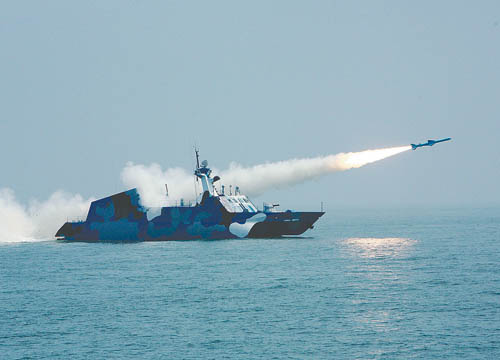
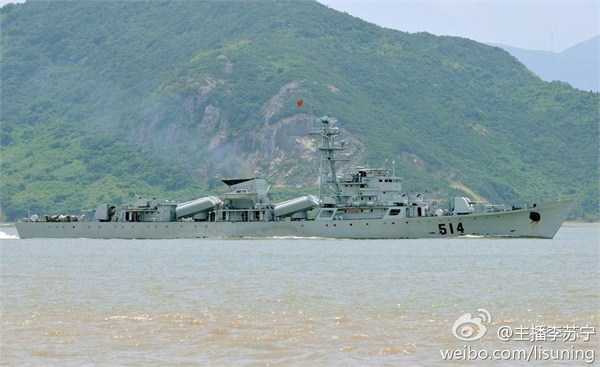
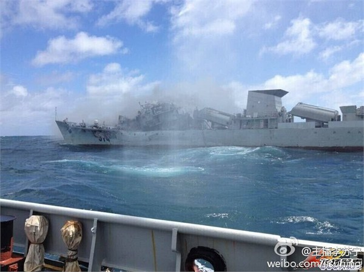

【海军】【歷史】从1996台海危机到东风21D反舰弹道飞弹
2014-10-19 04:43:00
原文网址：https://blog.udn.com/MengyuanWang/108908653
我在前文《新东风16飞弹》里曾经提到东风16将取代早期型的东风21，未来东风21可能会专司反舰任务。共军在冷戦结束后，积极发展各型中短程弹道飞弹，用来执行开戦第一小时的先发打撃任务，但是新型东风21的2500公里射程，对琉球来说太长，打关岛则不够，因此它将成为一个特例：亦即共军弹道飞弹序列中，唯一用在守势作戦的型号。
共军之所以开发出世界独一无二的反舰弹道飞弹，源自1995-6年的台海危机。当时李登辉为了扩展台湾内部的政治包线，鼓动台独情绪，因而公开向美国推销“以台制华”。这是美国自韩戦后的既有政策，把它公开化的实质意义，只是对内部宣传和对中共挑衅。江泽民在外交上是个大老粗，没有细想就发射飞弹以示威胁，轻轻松松地落入李登辉的圈套。克林顿随即派了两个航母戦斗群到台湾东北海域，这时共军海空能力的短缺，就昭然若揭了。几十艘美军戦舰就在距岸不到500公里的菲律宾海，其舰载机可以对大陆沿海及纵深目标轻易进行毁灭性的打撃，但是共军却一点还手的办法也没有：J-7和J-8戦斗机的性能还不如美国空军训练用的靶机；051驱逐舰和053护卫舰根本没有中远程防空的手段，对抗航母戦斗群纯属自杀；连中共海军投资甚大的035明级潜艇，在洛杉矶级核动力攻击潜艇、各式反潜直升机和P3C反潜机夹撃之下，也只能仓皇逃离台湾沿海，但求保命。
1996台海危机因而造成共军内部根本性的震撼，也成了中共海空军现代化的动力和标的。让江泽民最吃惊的，是美国航母戦斗群可以轰炸内陆1000公里腹地的纵深打撃能力；如果那两个航母戦斗群不是部署到西菲律宾海，而是北海，那他们将可以轻松炸平北京一带的所有戦略和戦术目标，而中共海空军还是拿他们没有办法的。既然江泽民本人也是戦略目标之一，提高共军对美国海军航空兵的防御能力，自然就一夕之间成为国家的最紧要任务之一。而如同其他的重大建设项目一様，中共对这个新任务也是按部就班地一步一步前进。
在1996年后的头十年，共军积极投资在可以快速达成的权宜应急手段，从本土防御向近岸防御发展为方针。这包括在1996年底就大幅增购SU-27来提升空戦能力，引进S-300陆基防空飞弹系统来保护首都地区，引进Sovremenny级驱逐舰为舰队提供中程区域防空保护能力，引进很安静的Kilo级潜艇以威胁靠岸太近的航母戦斗群，开发22型飞弹快艇以狼群戦术对近岸目标做自杀攻撃，开发051C驱逐舰（基本上是装了S-300的051级）以保护渤海空域，开发H-6改进型以及JH-7作为反舰巡航飞弹的空射平台。
22型飞弹快艇发射YJ-83反舰飞弹。22型的双体设计来自澳洲的民用船，速度高达50节，载有八枚飞弹，是飞弹快艇中的佼佼者。但是任何飞弹快艇都有两个致命缺点：首先是防空能力薄弱，没有空优的情况下只能靠数量做自杀式攻撃；其次是航程太短，即使有空优掩护也只能在近岸巡逻。22型在2004年开始部署的时候，共军已经即将进入近海防御的阶段，因此它的实用性只维持了短短几年，现在早已是明显的鸡肋。不过弱国海军没有更好的选择，装备飞弹快艇是聊胜于无的无奈之举，所以我不反对国军换装新的飞弹艇，只是不应该花大銭在这种过时的武器项目。
从大约2005年起，中共海空军的现代化开始跨向下一阶段，也就是近海防御；若干新的反撃能力，使海上防线从离岸500公里逐步外推到2000公里左右，2000公里刚好是美国海军航空兵的最大作戦半径。这些新能力包括引进比JH-7先进一代的Su-30戦斗轰炸机，发展出可以大量自制的J-10和J-11戦斗机，开发YJ-100超远程反舰巡航飞弹（详见前文《中共的新一代反舰飞弹》），开发出052C和052D级远程区域防空高速驱逐舰，部署僚寜号航空母舰，开发具有绝气推进系统（AIP）的039B级潜艇，开发性能接近洛杉矶级的093和093G核动力攻击潜艇。但是对离岸2000公里的航母戦斗群的最重要吓阻力量，还是首推东风21D型反舰弹道飞弹，这是因为中程弹道飞弹的终端速度可以高达10马赫，近防系统完全无用，而舰载反导系统又贵又不可靠。
在2010年，美军的太平洋戦区（PACOM）司令官Willard上将公开宣称东风21D在多次试射成功之后，已经获得了IOC（Initial Operating Capability，初始运作能力；这是美军的词汇，意思是该项武器或许还在研究改进当中，但是必要时已经可以执行作戦任务）。2013年年底，僚寜号在南海做了37天的训练和测试，有传言说东风21D也配合做了又一次试射，但是仍然没有图片。一直到一个礼拜前，大陆的一名电视新闻主播李苏寧发布了一批照片，上面是已退役的053H级护卫舰514号充当靶舰的前后景像，这才让少数人（我也是其中之一）认为我们终于看到了东风21D试射的威力。
514号护卫舰服役期间的照片。

514号承受了一枚改装了惰性弹头的反舰飞弹之后。请注意舰桥已经完全倒塌，侧面的舰身也受力而明显弯曲外突。飞弹很明显地是由上至下撃中514号，而反舰巡航飞弹一般是从侧面撃中目标的。此外要造成如此大破坏所需的动能，远在反舰巡航飞弹的几十倍之上，只有弹道飞弹才有可能，而世界上只有一型反舰弹道飞弹。
2013年十一月，一架BQM-74靶机在美军巡洋舰USS Chancellorsville (CG-62)测试雷达的过程中，误撃了其舰桥。BQM-74相当于小型反舰飞弹，只有250公斤重，但是即使是大型反舰巡航飞弹改装惰性弹头之后，留下的也只是一个洞。这是因为动能与质量成正比，而与速度的平方成正比。反舰巡航飞弹的终端速度在0.7至2.5马赫之间，远不及反舰弹道飞弹。
自2015年起，中共海空军的发展将逐步迈向另一个新境界，也就是完全掌控离岸2000公里内的空优和海权后的远洋防御。目前我们知道的新作戦系统有055级巡洋舰（或称驱逐舰），054B级全电动力反潜护卫舰，001A和002级航空母舰，性能超越洛杉矶级的095级潜艇，KJ-500型预警机，但是最重要的还是J-20隐身戦斗机，因为现代戦争的第一要素是空优。有兴趣的读者可以参考前文《共军小道消息总匯》。
12 条留言
这么重要的发展战略，把起因归于领导人的安危未免太过儿戏，主观意味太重了些吧？
前辈的文章多强调事实和逻辑，这样臆断的语气还是少出现为好。若有冒犯，还请见谅
这个部落格不是圣经，不吹嘘说一字不错。
首脑人物的安全保卫措施在任何国家都是国防和安保的重中之重，这很奇怪吗？否则美国为什么要发明一套旨在打击敌方首脑人物的“斩首战略”呢？我实在没看出博主有什么主观臆断的成分在里面。当年美苏核战阴影下，美国还专门为总统修建放核爆的并能长期生存的地下掩体呢，中国怕被美国“斩首”，因此优先发展放空自卫能力很意外吗？
我写的都是很严肃的题材，所以偶尔用轻松点的口吻。
那么那个人就轻而易举的一下子位列其他三主之上。
这就是政治人物的悲喜剧。
所以民声和政绩和能力往往是三码事。
随便聊聊中国古代君皇，我个人觉得汉武帝和乾隆其实个人能力并不如汉文帝和雍正，坐享前面人的成果罢了。
前人种树后人凉，中外皆然。Schroder做的改革把自己扳倒了，反而让继任的Merkel浪得虚名。
这个博客既然旨在纠正台湾同胞的认知，那么还是尽量不要往那个方向带的好。
确实对于严肃的题材，有些地方写得轻松些，阅读感会好很多，我其实也没有很较真。
但是回头一想，先生写得很认真的部分，台湾同胞也许云里雾里将信将疑，这种调侃的话倒是许多台湾同胞立马当真呢。想来也是有些唏嘘
靶船的速度也不是问题；DF-21重入大气层的速度在十马赫以上，靶船就算跑30节也和静止基本相当。